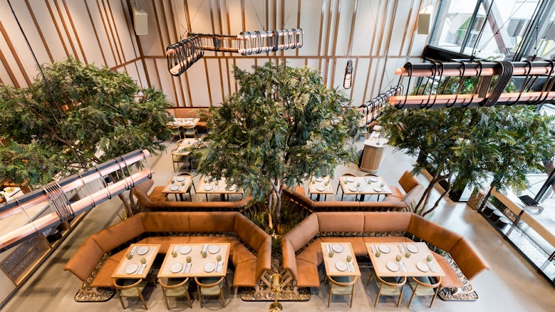
85 Eos & Nyx

86 Tangjip Korean R

87 Burdell
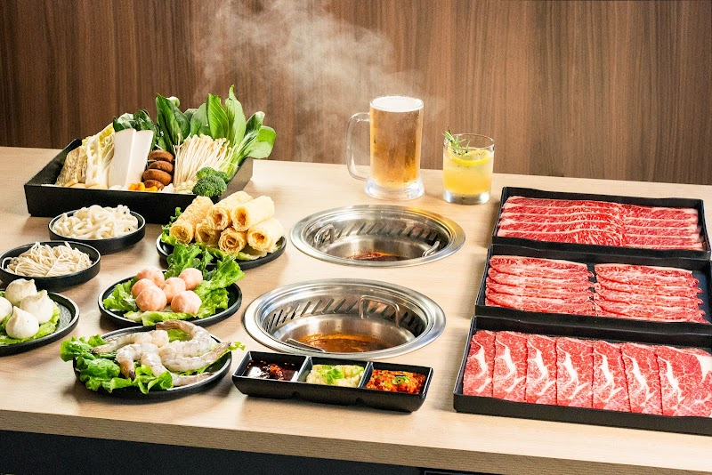
88 Mumu Hot Pot
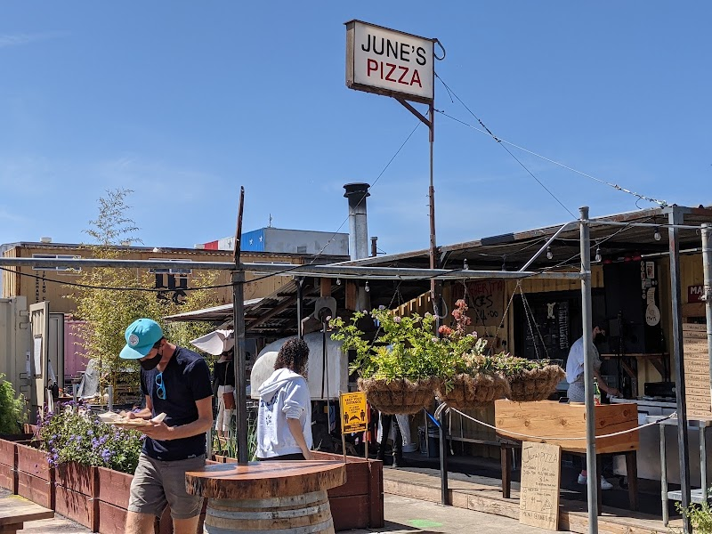
89 June's Pizza

90 Chengdu Memory H
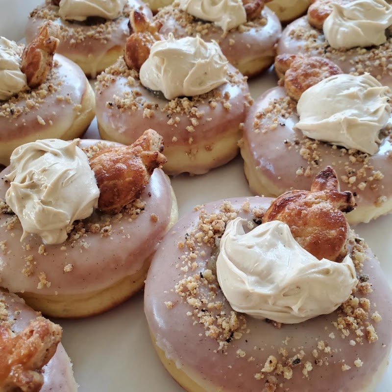
91 Doughweime
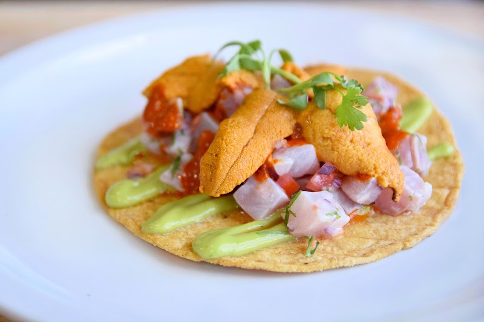
92 Holbox
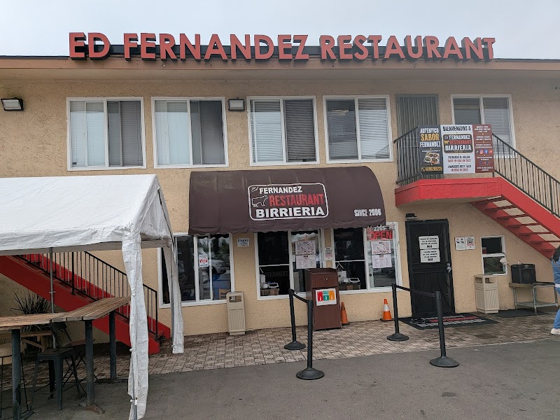
93 Fernandez Restau
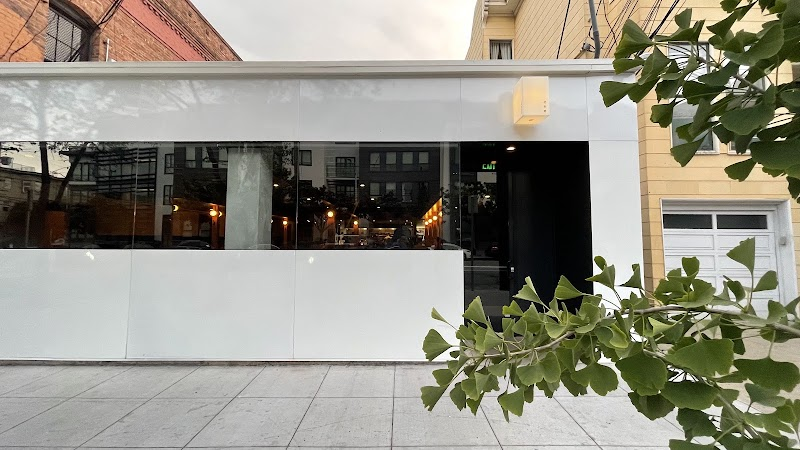
94 San Ho Won
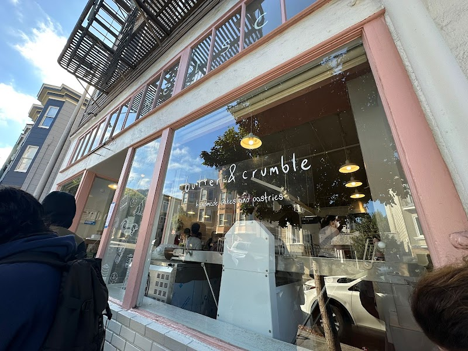
95 Butter & Crumble
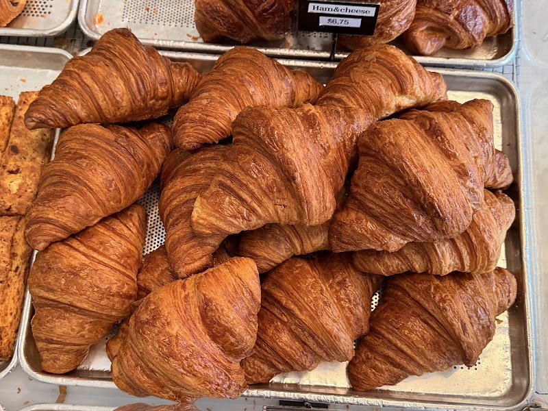
96 Arsicault Bakery

97 Arsicault

98 Ham Ji Park

99 Moo's Craft Barb

100 Pinecone Bakesho
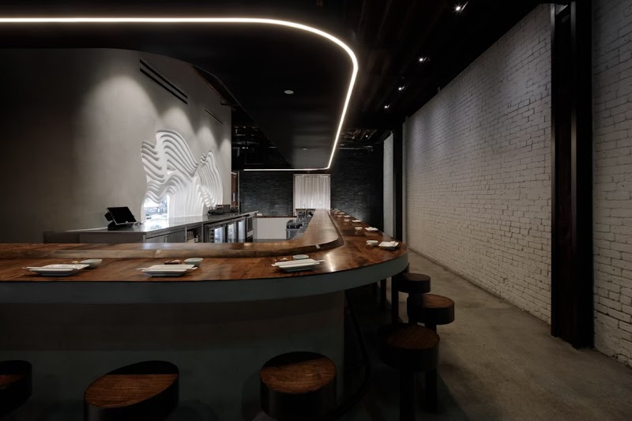
101 Yunomi Handroll

102 Sudachi

103 Apollonia's Pizz
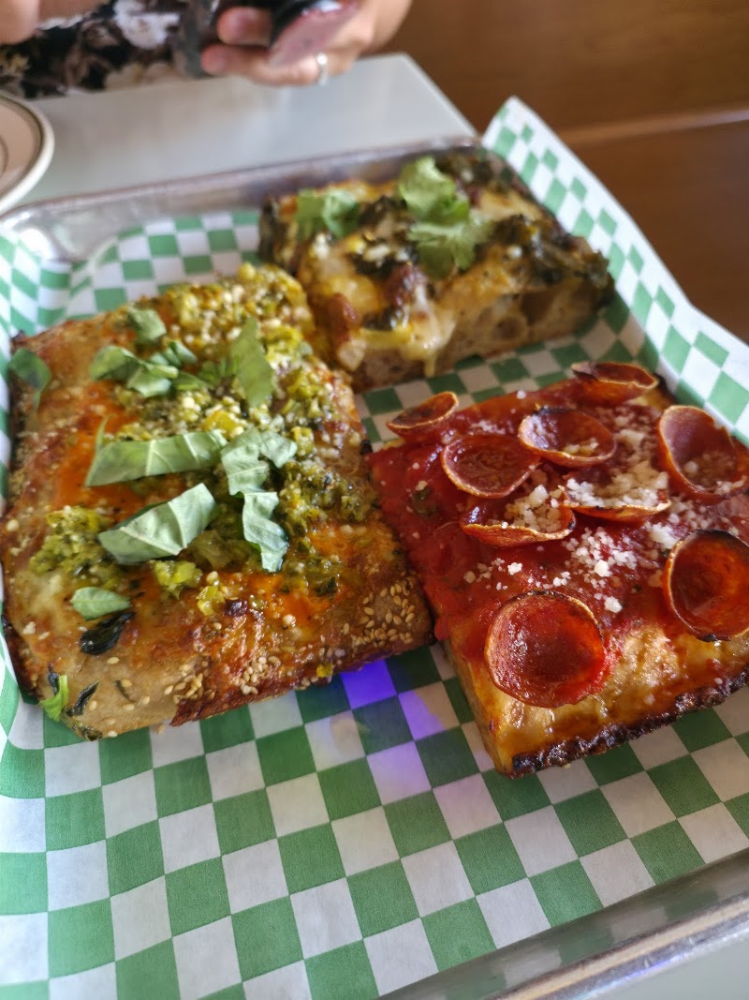
104 Quarter Sheets

105 Mama Xita BBQ